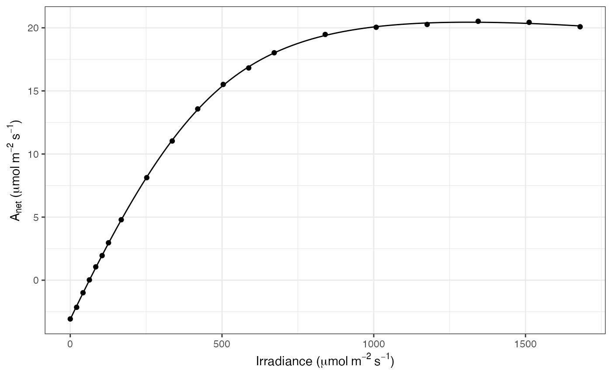
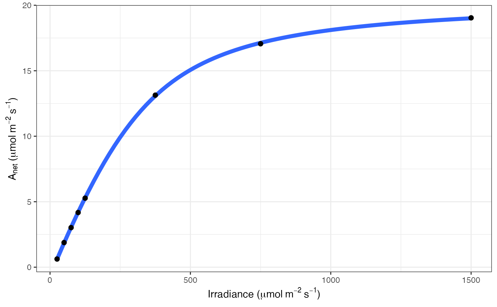

Fitting light response curves
Joseph R. Stinziano and Christopher D. Muir
2024-11-23
Source:vignettes/light-response.Rmd
light-response.RmdPreferred version (photosynthesis >= 2.1.1)
This package currently only implements the Marshall & Biscoe (1980) non-rectangular hyperbola model of the photosynthetic light response.
Fit the light-response curve using nonlinear least-squares (nls)
library(broom)
library(dplyr)
library(photosynthesis)
# Read in your data
dat = system.file("extdata", "A_Ci_Q_data_1.csv", package = "photosynthesis") |>
read.csv() |>
# Set grouping variable
mutate(group = round(CO2_s, digits = 0)) |>
# For this example, round sequentially due to CO2_s set points
mutate(group = as.factor(round(group, digits = -1)))
# Fit one light-response curve
fit = fit_photosynthesis(
.data = filter(dat, group == 600),
.photo_fun = "aq_response",
.vars = list(.A = A, .Q = Qabs),
)
# The 'fit' object inherits class 'nls' and many methods can be used
## Model summary:
summary(fit)##
## Formula: .A ~ marshall_biscoe_1980(Q_abs = .data[[".Qabs"]], k_sat, phi_J,
## theta_J) - Rd
##
## Parameters:
## Estimate Std. Error t value Pr(>|t|)
## k_sat 21.170337 0.154428 137.09 1.70e-08 ***
## phi_J 0.061543 0.001218 50.52 9.19e-07 ***
## theta_J 0.775752 0.014526 53.40 7.36e-07 ***
## Rd 0.666320 0.063490 10.49 0.000466 ***
## ---
## Signif. codes: 0 '***' 0.001 '**' 0.01 '*' 0.05 '.' 0.1 ' ' 1
##
## Residual standard error: 0.0539 on 4 degrees of freedom
##
## Number of iterations to convergence: 5
## Achieved convergence tolerance: 1.49e-08
## Estimated parameters:
coef(fit)## k_sat phi_J theta_J Rd
## 21.17033721 0.06154348 0.77575157 0.66631987
## 95% confidence intervals:
confint(fit)## 2.5% 97.5%
## k_sat 20.75337772 21.60612987
## phi_J 0.05835624 0.06501655
## theta_J 0.73285635 0.81306156
## Rd 0.49523165 0.84311606
## Tidy summary table using 'broom::tidy()'
tidy(fit, conf.int = TRUE, conf.level = 0.95)## # A tibble: 4 × 7
## term estimate std.error statistic p.value conf.low conf.high
## <chr> <dbl> <dbl> <dbl> <dbl> <dbl> <dbl>
## 1 k_sat 21.2 0.154 137. 0.0000000170 20.8 21.6
## 2 phi_J 0.0615 0.00122 50.5 0.000000919 0.0584 0.0650
## 3 theta_J 0.776 0.0145 53.4 0.000000736 0.733 0.813
## 4 Rd 0.666 0.0635 10.5 0.000466 0.495 0.843
## Calculate light compensation point
coef(fit) |>
t() |>
as.data.frame() |>
mutate(LCP = ((Rd) * (Rd * theta_J - k_sat) / (phi_J * (Rd - k_sat)))) |>
## Calculate residual sum-of-squares
sum(resid(fit) ^ 2)## [1] 33.59129Plot model fit and raw data
The deprecated function fit_aq_response() generated a
figure automatically, but it used geom_smooth() rather than
plotting the model fit. We now prefer to use generic methods from the
package ggplot2 and
plot the fitted curve. This allows users the ability to more easily
customize their figures.
library(ggplot2)
b = coef(fit)
df_predict = data.frame(Qabs = seq(0, 0.84 * 1500, length.out = 100)) |>
mutate(
A = marshall_biscoe_1980(
Q_abs = Qabs,
k_sat = b["k_sat"],
b["phi_J"],
b["theta_J"]
) - b["Rd"]
)
ggplot(mapping = aes(Qabs, A)) +
geom_line(data = df_predict) +
geom_point(data = filter(dat, group == 600)) +
labs(
x = expression("Irradiance (" * mu * mol ~ m^{-2} ~ s^{-1} * ")"),
y = expression(A[net] ~ "(" * mu * mol ~ m^{-2} ~ s^{-1} * ")")
) +
theme_bw()
Fit multiple curves with photosynthesis and purrr
In the previous version, we used fit_many() to fit many
light-response curves simultaneously. We now prefer to use generic
methods from the package purrr that are
already pretty good.
library(purrr)
fits = dat |>
split(~ group) |>
map(fit_photosynthesis, .photo_fun = "aq_response", .vars = list(.A = A, .Q = Qabs))
## Estimated parameters:
fits |>
map(coef) |>
map(t) |>
map(as.data.frame) |>
imap_dfr(~ mutate(.x, CO2_s = .y))## k_sat phi_J theta_J Rd CO2_s
## 1 -0.1832198 0.004189779 0.2428476 -0.09209662 50
## 2 2.6370733 0.017295931 0.8858139 0.59492313 100
## 3 7.3481571 0.032255707 0.8376462 0.61479141 200
## 4 11.4687982 0.045046336 0.7898826 0.76746932 300
## 5 16.4505827 0.057537264 0.6997933 0.89736502 410
## 6 21.1703372 0.061543475 0.7757516 0.66631987 600
## 7 23.9305140 0.067744069 0.7514331 0.78493847 820
## 8 25.0686239 0.068975627 0.7632357 0.58529680 1200
## 9 25.6413999 0.071556328 0.7411443 0.45326420 1600Fit Bayesian light-response curves with brms and Stan
Traditional model fitting use a nonlinear least-squares approach, but Bayesian methods have some advantages, especially with more complex data sets. We added an option to fit a single Bayesian light-response curve using the amazing brms package which fits models in Stan. We have not implemented more complex approaches (e.g. multilevel light-response models) because once you are doing that, it’s probably easier to code the model directly into brms functions. Hopefully this code can get you started though. We have not run the example below, but copy-and-paste into your R Console to try.
fit = fit_photosynthesis(
.data = filter(dat, group == 600),
.photo_fun = "aq_response",
.vars = list(.A = A, .Q = Qabs),
.method = "brms",
brm_options = list(chains = 1)
)
# The 'fit' object inherits class 'brmsfit' and many methods can be used
summary(fit)Fit the light-response curve with photoinhibition using nonlinear least-squares (nls)
library(broom)
library(dplyr)
library(tibble)
library(photosynthesis)
# Simulate data
set.seed(202411123)
## Parameters
k_sat = 30
phi_J = 0.05
theta_J = 0.8
Rd = 3
b_inh = 0.003
## Vector of light values
Q = c(0, 25, 50, 75, 100, 125, 150, 200, 300, 400, 500, 600, 700, 800, 1000, 1200, 1400, 1600, 1800, 2000)
dat = tibble(
Qabs = 0.84 * Q,
A = photoinhibition(Qabs, k_sat, phi_J, theta_J, b_inh) - Rd + rnorm(length(Qabs), 0, 0.1)
)
# Fit one light-response curve
fit = fit_photosynthesis(
.data = dat,
.photo_fun = "aq_response",
.model = "photoinhibition",
.vars = list(.A = A, .Q = Qabs),
)
# The 'fit' object inherits class 'nls' and many methods can be used
## Model summary:
summary(fit)##
## Formula: .A ~ photoinhibition(Q_abs = .data[[".Qabs"]], k_sat, phi_J,
## theta_J, b_inh) - Rd
##
## Parameters:
## Estimate Std. Error t value Pr(>|t|)
## k_sat 3.023e+01 6.477e-01 46.671 < 2e-16 ***
## phi_J 5.023e-02 6.119e-04 82.087 < 2e-16 ***
## theta_J 8.001e-01 1.681e-02 47.584 < 2e-16 ***
## Rd 3.094e+00 4.595e-02 67.332 < 2e-16 ***
## b_inh 3.108e-03 3.282e-04 9.469 1.02e-07 ***
## ---
## Signif. codes: 0 '***' 0.001 '**' 0.01 '*' 0.05 '.' 0.1 ' ' 1
##
## Residual standard error: 0.07342 on 15 degrees of freedom
##
## Number of iterations to convergence: 5
## Achieved convergence tolerance: 1.49e-08
## Estimated parameters:
coef(fit)## k_sat phi_J theta_J Rd b_inh
## 30.229369916 0.050228967 0.800109337 3.093915835 0.003107636
## 95% confidence intervals:
confint(fit)## 2.5% 97.5%
## k_sat 28.911503109 31.701749154
## phi_J 0.048955458 0.051587628
## theta_J 0.760461401 0.833244529
## Rd 2.996235314 3.192817270
## b_inh 0.002436191 0.003847506
## Tidy summary table using 'broom::tidy()'
tidy(fit, conf.int = TRUE, conf.level = 0.95)## # A tibble: 5 × 7
## term estimate std.error statistic p.value conf.low conf.high
## <chr> <dbl> <dbl> <dbl> <dbl> <dbl> <dbl>
## 1 k_sat 30.2 0.648 46.7 1.18e-17 28.9 31.7
## 2 phi_J 0.0502 0.000612 82.1 2.55e-21 0.0490 0.0516
## 3 theta_J 0.800 0.0168 47.6 8.81e-18 0.760 0.833
## 4 Rd 3.09 0.0459 67.3 4.94e-20 3.00 3.19
## 5 b_inh 0.00311 0.000328 9.47 1.02e- 7 0.00244 0.00385Plot model fit and raw data
library(ggplot2)
b = coef(fit)
df_predict = data.frame(Qabs = seq(0, 0.84 * 2000, length.out = 100)) |>
mutate(
A = photoinhibition(
Q_abs = Qabs,
k_sat = b["k_sat"],
b["phi_J"],
b["theta_J"],
b["b_inh"]
) - b["Rd"]
)
ggplot(mapping = aes(Qabs, A)) +
geom_line(data = df_predict) +
geom_point(data = dat) +
labs(
x = expression("Irradiance (" * mu * mol ~ m^{-2} ~ s^{-1} * ")"),
y = expression(A[net] ~ "(" * mu * mol ~ m^{-2} ~ s^{-1} * ")")
) +
theme_bw()
Deprecated version (photosynthesis <= 2.1.1)
The fit_aq_response() function is the original version,
but we are no longer updating it and may phase it out of future
releases. Use
fit_photosynthesisi(..., .photo_fun = 'aq_response')
instead.
library(dplyr)
library(photosynthesis)
# Read in your data
dat = system.file("extdata", "A_Ci_Q_data_1.csv", package = "photosynthesis") |>
read.csv() |>
# Set grouping variable
mutate(group = round(CO2_s, digits = 0)) |>
# For this example, round sequentially due to CO2_s setpoints
mutate(group = as.factor(round(group, digits = -1))) |>
rename(A_net = A, PPFD = Qin)
# To fit one AQ curve
fit = fit_aq_response(filter(dat, group == 600))## Warning: `fit_aq_response()` was deprecated in photosynthesis 2.1.1.
## ℹ Please use the `.photo_fun` argument of `fit_photosynthesis()` instead.
## This warning is displayed once every 8 hours.
## Call `lifecycle::last_lifecycle_warnings()` to see where this warning was
## generated.## Warning: `aq_response()` was deprecated in photosynthesis 2.1.1.
## ℹ Please use `marshall_biscoe_1980()` instead.
## ℹ The deprecated feature was likely used in the photosynthesis package.
## Please report the issue at <https://github.com/cdmuir/photosynthesis/issues>.
## This warning is displayed once every 8 hours.
## Call `lifecycle::last_lifecycle_warnings()` to see where this warning was
## generated.
# Print model summary
summary(fit[[1]])##
## Formula: A_net ~ aq_response(k_sat, phi_J, Q_abs = data$Q_abs, theta_J) -
## Rd
##
## Parameters:
## Estimate Std. Error t value Pr(>|t|)
## k_sat 21.167200 0.158332 133.69 1.88e-08 ***
## phi_J.Q_abs 0.051907 0.001055 49.18 1.02e-06 ***
## theta_J 0.775484 0.014920 51.98 8.20e-07 ***
## Rd.(Intercept) 0.668495 0.065235 10.25 0.000511 ***
## ---
## Signif. codes: 0 '***' 0.001 '**' 0.01 '*' 0.05 '.' 0.1 ' ' 1
##
## Residual standard error: 0.05535 on 4 degrees of freedom
##
## Number of iterations to convergence: 5
## Achieved convergence tolerance: 1.49e-08
# Print fitted parameters
fit[[2]]## A_sat phi_J theta_J Rd LCP resid_SSs
## k_sat 21.1672 0.05190746 0.7754836 0.6684953 12.97289 0.01225491
# Print graph
fit[[3]]
# Fit many curves
fits = fit_many(
data = dat,
funct = fit_aq_response,
group = "group",
progress = FALSE
)## Warning: `fit_many()` was deprecated in photosynthesis 2.1.3.
## This warning is displayed once every 8 hours.
## Call `lifecycle::last_lifecycle_warnings()` to see where this warning was
## generated.
# Look at model summary for a given fit
# First set of double parentheses selects an individual group value
# Second set selects an element of the sublist
summary(fits[[3]][[1]])##
## Formula: A_net ~ aq_response(k_sat, phi_J, Q_abs = data$Q_abs, theta_J) -
## Rd
##
## Parameters:
## Estimate Std. Error t value Pr(>|t|)
## k_sat 7.347423 0.141931 51.768 8.33e-07 ***
## phi_J.Q_abs 0.027192 0.001511 17.994 5.61e-05 ***
## theta_J 0.837778 0.030608 27.371 1.06e-05 ***
## Rd.(Intercept) 0.615283 0.086994 7.073 0.00211 **
## ---
## Signif. codes: 0 '***' 0.001 '**' 0.01 '*' 0.05 '.' 0.1 ' ' 1
##
## Residual standard error: 0.06799 on 4 degrees of freedom
##
## Number of iterations to convergence: 4
## Achieved convergence tolerance: 1.49e-08
# Print the parameters
fits[[2]][[2]]## A_sat phi_J theta_J Rd LCP resid_SSs
## k_sat 2.637157 0.01458002 0.8858892 0.5951635 42.17813 0.02446394
# Print the graph
fits[[3]][[3]]
#Compile graphs into a list for plotting
fits_graphs = compile_data(fits, list_element = 3)
# Print graphs to jpeg
# print_graphs(data = fits_graphs, path = tempdir(), output_type = "jpeg")
#Compile parameters into data.frame for analysis
fits_pars = compile_data(fits, output_type = "dataframe", list_element = 2)